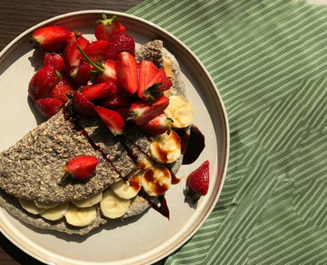

Інгредієнти змішати, залити водою та залишити на 30 хвилин. Викласти тісто на суху холодну сковорідку обсмажити з двох сторін.
- банан (1шт.)
- вівсяна пластівці (1скл.)
- вода (250 мл.)
- лляне борошно (1ст.л.)
Інгредієнти змішати, залити водою та залишити на 30 хвилин. Викласти тісто на суху холодну сковорідку обсмажити з двох сторін.